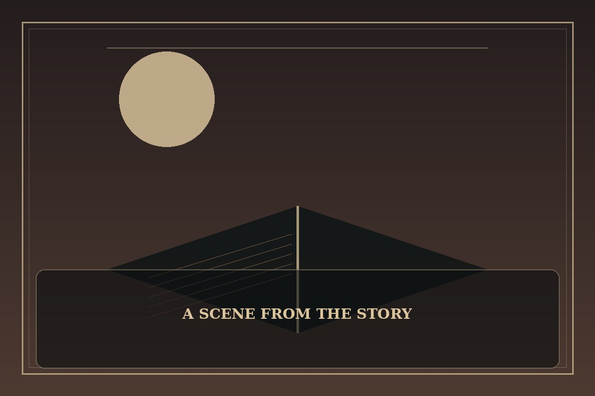

The Beginning After the End
Synopsis
A life that once seemed complete begins again in a world of magic, unfamiliar customs, and second chances. The new journey asks whether experience can guide a person without trapping them in the past.
Chapter 1: A Second First Breath
The first thing Arthur noticed was the light: warm, golden, and softer than the sterile brightness he remembered. The second was the sound of a heartbeat that was not his old one, steady beneath a blanket in a quiet room.
He had carried the memories of a long life into a body that could barely lift its own head. The world outside the window was beautiful, but beauty did not erase regret. Every familiar instinct belonged to someone who had already made mistakes he could not undo.
When he finally stood, his legs trembled and his caretaker rushed to help. Arthur smiled at the small victory. A second life would not make him wise by itself; it would only give him another chance to choose patience before pride and kindness before fear.

This fan-made sample is an original piece created for a student website project; it is not an official chapter of The Beginning After the End.